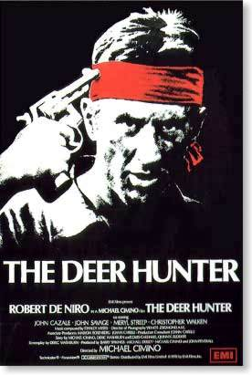

Khi cuốn phim Kẻ săn hươu (The Deer Hunter) của đạo diễn Michael Cimino được trình chiếu (1978) trên đất Mỹ, nó đã bị cấm ở nhiều nước khác, dĩ nhiên, trong đó có Việt Nam. Lý do cấm chiếu đến ngày nay vẫn không thể hiểu được. Chính điều đó, phần lớn, đã làm bộ phim trở thành huyền thoại. Và hơn nữa, với nhạc phim không thể nào quên, với những cảnh "roulette Nga" lặp đi lặp lại nhiều lần, bộ phim xếp hàng đầu trong thể loại phim về chiến tranh Việt Nam. Cuộc chiến đẫm máu này đã giành được cho chính nó một thể loại phim riêng biệt, "khá đặc thù" trong lịch sử điện ảnh nước Mỹ. Kẻ săn hươu còn có vị trí đặc biệt giữa những cuốn phim mang đề tài chiến tranh. Phim nói về một cuộc chiến. Một cuộc chiến cũng có vị trí đặc biệt trong lịch sử của nước Mỹ. Có thể nói, chiến tranh Việt Nam, đến bây giờ, vẫn là "cơn sốc kéo dài" trong xã hội Hoa kỳ. Bao "đứa con oai hùng" của "dân tộc oai hùng" đã bỏ mạng tại Việt Nam. Đây là cuộc chiến đầu tiên mà xã hội Mỹ lên tiếng phản đối mạnh mẽ. Cuộc chiến gây nỗi đau cho tất cả các bà mẹ. Cuộc chiến chẳng thà bị hy sinh còn hơn sống sót trở về. Cả xã hội Mỹ chỉ thấy rằng những đứa con trẻ trung của họ, hoặc chết mất xác trên một mảnh đất xa lạ, cách nước Mỹ hàng nghìn cây số, nơi họ không có phận sự gì cả, hoặc trở về với thân tàn ma dại, tinh thần suy sụp. Những gì họ trải qua trong cuộc chiến đã làm thay đổi và biến dạng hoàn toàn những người lính Mỹ trở về. Vĩnh viễn họ trở thành những "phế nhân" trong xã hội Mỹ, trong cái công việc gọi là "thực hiện những giấc mơ Mỹ". Các bà mẹ Mỹ không biết phải làm gì với chúng. Nước Mỹ không "giải toả" được "cơn sốc kéo dài" này, cũng như không thể "xoa dịu" được "nỗi đau" thất bại trong chiến tranh Việt Nam. Điện ảnh, cũng như những ngành nghệ thuật khác, cố gắng miêu tả, vẽ lên cái thực, cái chính của những vấn đề xã hội. Nghệ thuật phần nào "giải toả" các "cú sốc" và giúp hiểu được những điều đã xảy ra. Chính vì thế, chỉ sau cuộc chiến vài năm, nhiều đạo diễn bắt tay ngay vào công việc làm phim về đề tài "muôn màu" của cuộc chiến này. Hàng loạt phim về chiến tranh Việt Nam ra đời. Chiến tranh, một "món hàng" đắt khách. Đối với các đạo diễn phim lại càng "hời". Vì trong cùng một lúc, họ đưa cho người xem những phong cảnh phim tuyệt diệu, những tình huống kịch tính tuyệt vời. Phải nói rằng đạo diễn Cimino rất tài tình trong việc dựng cuốn phim này. Ông không quan tâm đến việc đưa lên màn ảnh những cảnh chết chóc rùng rợn thường thấy ở những bộ phim khác (như trong phim Apocalypse Now, 1979, của Coppola), mà chú trọng vào việc làm nổi bật những mối quan hệ giữa người với người. Đây chính là giá trị chủ yếu của Kẻ săn hươu. Milos Forman, đạo diễn phim tài ba của Cộng hoà Séc đã quay một cuốn phim về lớp trẻ thời hippy ở Mỹ. Cuốn phim mang tựa đề Cất cánh (Taking Off, 1971). Có thể nói: đây là một bộ phim hay. Hay hơn rất nhiều so với Tóc (Hair, 1979) nhưng không có tiếng tăm tương xứng. Với cái nhạy cảm mang tính xã hội học và tâm lý học, Milos Forman đã làm toát lên rất rõ sự "gián đoạn" giữa hai thế hệ: các thanh niên hippy và cha mẹ họ. Nếu có thể đặt một cái tên khác cho Kẻ săn hươu, thì đó sẽ là "Sự gián đoạn". Kẻ săn hươu bộc lộ rất sát sự "gián đoạn" hoàn toàn, không thể "chắp nối" được, giữa những chiến binh "thất trận trở về" với những người dân Mỹ bình thường. Để đạt được mục đích này, Cimino đã chọn cách kể chuyện diễn giải không có kết thúc, đượm màu sắc và âm thanh của một thiên anh hùng ca. Bộ phim dài ba tiếng đồng hồ. Đoạn đầu (gần nửa thời gian cả bộ phim), giới thiệu rất chi tiết và đầy cảm xúc về ba chàng trai (những nhân vật chính): Mike, Steve và Nick, cùng với môi trường sống của họ. Họ là những người công nhân bình thường. Họ làm việc. Tan tầm rủ nhau đi quán. Hôm sau, đám cưới của một người trong số họ. Rồi buổi đi săn hươu cuối cùng trước khi bay sang Việt Nam xung trận. Đám cưới được "miêu tả" dài dòng, siêu hiện tại, với những điệu nhảy dân gian chân chất. Không có gì đặc biệt cả. Trên màn ảnh chỉ là một thị trấn nhỏ. Hiu quạnh. Một xưởng máy. Một quán bia đơn độc. Một trò giải trí duy nhất: đánh bi-da. Một ngôi nhà văn hoá, nơi dưới các lá cờ Mỹ và các tấm ảnh chân dung phóng to của các chú rể, diễn ra các đám cưới của các cô dâu đã khéo léo "che đậy" sự mang thai của mình. Rồi cảnh phim chuyển đột ngột: các chàng trai đang xả đạn trong một cánh rừng Việt Nam đầy khói và lửa. Theo sát nội dung cuốn phim, Cimino muốn tạo nên một cái tương phản: các chàng trai không có phận sự gì trên đất Việt Nam. Và người xem không thể hiểu nhầm ý hướng này của ông, khi được biết những nhân vật chính trong phim là những người Nga (Nick, thực tế là Nikolai). Những người lính bảo vệ đất nước Hoa Kỳ trên lãnh thổ Việt Nam, trong khi họ không phải là người Mỹ!Bên cạnh đó, những người dân của cái thị trấn bình lặng này sống trong một khuôn khổ xã hội nhiều hạn chế: phải ngoan đạo, các cô gái không được mang thai trước khi chính thức về nhà chồng, hoặc nam giới không được kết hôn với các cô gái xa lạ v.v... Nhưng vì đề tài chính của Kẻ săn hươu không phải là cuộc sống của cái làng nhỏ này, nên Cimino, cùng với nhà quay phim "gạo cội" Zsigmond Vilmos, chỉ phác hoạ vài nét tượng trưng biểu cảm trong đoạn đầu của cuốn phim. Để quay những cảnh bên ngoài, máy quay luôn luôn ở một độ cao nhất định rồi hạ dần xuống: các đường dây tải điện được thấy rõ nét trên màn ảnh. Rất nhiều đường nét đen đủi, xám xịt cắt vỡ ngang dọc quang cảnh thị trấn. Nếu ống quay đi từ dưới lên thì người xem sẽ thấy một cảnh khác hẳn: một bầu trời cao xanh, không một gợn mây bao trùm lên một thị trấn bình yên. Nhưng không: trên màn ảnh hiện lên cảnh những người dân trong một không gian rối rắm, không thanh tịnh. Về những cảnh bên trong: bắt đầu từ những khuôn mặt cận cảnh. Sau khi người xem đã nhận biết được nhân vật, ống kính rời dần ra xa. Môi trường sống của nhân vật: khoảng không trống rỗng, căn phòng bừa bộn. Cimino đạt được mục đích: người xem đầu tiên được quan sát nhân vật, có nhận định về nhân vật, sau đó cố gắng tìm hiểu nhân vật trong môi trường sống của họ.
Nguyên tắc tạo hình này được vận dụng theo suốt chiều dài cuốn phim: Cimino chú trọng vào chính nhân vật, tình huống cụ thể chỉ là thứ yếu. Vì thế không thể thấy những thước phim hành động, chỉ còn những trạng thái. Cimino tỉ mỉ giới thiệu từng trạng thái, không quan tâm đến quá trình chuyển cảnh. Người xem không thấy cảnh Mike, Steve và Nick nhập ngũ như thế nào, họ bay sang Việt Nam ra sao, cũng như cái gì xảy ra với họ ở đó... Trên màn ảnh liên tiếp các trạng thái: các chàng trai bị nhốt trong một cái cũi "tù" lềnh bềnh trên dòng Mê Kông, máu tươi của các nạn nhân đang rỉ xuống cổ, và vài phút sau họ đã phải "chơi" "roulette Nga" với nhau. Đến đây người xem có thể nhận định rằng: trên đất nước Việt Nam được vẽ lên bởi Cimino không có một cuộc chiến nào hết, chỉ có những cực hình không bao giờ chấm dứt. Những chàng trai này không có khả năng chiến đấu, người xem không được chứng kiến một cảnh "xung trận" nào của họ, mà chỉ thấy những hình hài thương tích, đầy máu me, bùn lầy, đang tìm cách thoát khỏi cái gọi là "cuộc chiến bảo vệ nước Mỹ". Họ cũng không thể hiểu được làm sao họ lại "sa lầy" vào cái "trạng thái cực hình" triền miên này. Sau đó họ tách rời nhau ra, mỗi người một ngả. Và chúng ta, những người xem, sau gần một tiếng đồng hồ, lại trở về cái "trạng thái ban đầu": trước mắt mình cái thị trấn nhỏ bé không tên trên đất Mỹ, nhưng với tình huống hoàn toàn khác.
Người xem chỉ thấy cảnh Mike trở về. Trốn tránh mọi người thân, bạn bè. Anh xa lánh hầu như tất cả. Cimino đã "ngốn" hai tiếng đồng hồ để đưa chúng ta đến những đoạn phim này, với mục đích: người xem cảm nhận được sự khác biệt. Đó là: giữa những người ở lại và các binh lính sống sót trở về có một vực thẳm không đáy. Cái vực thẳm không thể "lấp" kín được. Cái vô hiệu quả của sự hoà nhập trở lại cuộc sống bình thường, mặc dù cái thị trấn bé nhỏ và người dân của nó không thay đổi. Chỉ có ba chàng trai đi xa một thời gian. Khi trở về, Mike đã "mất chỗ đứng" nơi đây. Những gì anh thấy và trải qua ở Việt Nam làm anh có cái nhìn khác hẳn về cuộc sống, về cái chết, về ý nghĩa của cả hai điều ấy. Đối với người dân ở thị trấn, đó như một thông điệp không thể giải mã được.
Tại châu Âu, chúng ta được xem khá nhiều phim tương tự và được đọc khá nhiều sách về đề tài Lò Thiêu (Holocaust). Sự trở về từ "cõi chết" của những kẻ "sống sót" là một niềm vui cho đến khi họ vỡ lẽ ra rằng: vì cuộc đời của những người bên ngoài quá bình thường, nên họ không thể hiểu và cảm thông cho những số phận bên trong các trại tập trung, "thoát" hơi độc ngạt trở về. Chìa khoá để hai con người biết và hiểu nhau ở chỗ: họ phải có chung quá khứ, cùng trải qua những "khúc khuỷu" trong khoảng thời gian nào đó trên "đường" đời, hoặc ít nhất phải có chung kinh nghiệm sống. Thiếu những điều trên, họ là những người "dưng". Cùng lắm chỉ nói chuyện "suông" với nhau. "Xả thân" vào một cuộc chiến, coi như con người bị tách ra khỏi chính cuộc sống của mình. Họ rơi ra ngoài quỹ đạo sống bình thường và không thể quay trở lại. Điều trớ trêu: không có một con đường nào khác cho họ. Nhà văn Hung Kertész Imre đã đặt tên cho cái trạng thái bi ai ấy một cái tên đầy triết lý phương Đông: "Không số phận". Số phận đời thường của Mike đã bị "đánh cắp", và anh ta không được "ban phát" một số phận khác thay thế. Có hoạ chăng, chỉ là một trạng thái sống mù mờ, không lối thoát. Cũng giống như những người thoát chết từ Holocaust trở về, cựu chiến binh Mỹ chỉ "cà nhắc" trong cái cảnh ngộ không thể định nghĩa được. Cảnh ngộ này (trước đó là quê hương, tổ quốc của họ: đất nước Hoa kỳ oai hùng) đã "tước" mất số phận đời thường của những người lính Mỹ (mặc dù họ sẵn sàng hiến thân để bảo vệ nó), chỉ để lại cho họ một trạng thái "sống" mòn mỏi. Những chàng trai như Mike không biết phải làm gì với trạng thái "sống" quái gở này.
Với lời thề không bao giờ bỏ rơi bạn, Mike quay lại Sài Gòn tìm Nick. Hòng đưa Nick trở về quê hương, nhưng Mike đã nhầm. Cả hai người: Nick (từ Sài Gòn) và Steve (từ bệnh viện) đều không muốn quay lại chốn cũ. Họ cảm nhận điều Mike đã nghiệm ra: cuộc sống của họ trên quê hương đã chấm dứt.
Điều nghịch lý lớn nhất sau chiến tranh Việt Nam: không phải chiến trường, mà là Đất Mẹ không còn, nơi "trở về" đã mất đi. Chúng ta có thể thấy sự nhận biết này của Nick trong cảnh phim: anh thử gọi điện về nhà nhưng không được. Quê hương đối với anh không tồn tại nữa, hoặc ít ra, không thể "móc nối" được. Chính vì thế (theo nhiều nhà phê bình điện ảnh) Kẻ săn hươu nên dừng lại bằng cái chết của Nick. Đoạn cuối diễn tả đám tang và việc rời viện về nhà của Steve chỉ là nhầm lẫn của Cimino. Cũng có thể, đơn giản là ông không muốn kết thúc bộ phim, không có cái "chấm hết". Cơn sốc "triền miên" này không bao giờ hết trên đất Mỹ!
Mike, người thợ săn tinh tường và kỷ luật, có một nguyên tắc đi săn cho riêng mình: hạ con thú chỉ bằng một viên đạn. Mike giữ vững tinh thần trong mọi tình huống. Anh cứu Steve và Nick thoát khỏi cái địa ngục trần gian của cuộc chiến. Nhưng cũng chính cái bản lĩnh kiên định của Mike đã làm anh bị nhầm. Bởi vì từ đầu đến cuối anh luôn nghĩ rằng: có thể đánh bại mọi cuộc chiến, anh là kẻ chiến thắng, vinh quang trở về. Nhưng sự thật lại là: Cuộc chiến Việt Nam đã nhấn chìm các anh vào rất sâu trong cái địa ngục kinh người của nó từ lâu!
Để diễn tả điều này, Cimino sử dụng nhiều hình ảnh (đặc tính chung của điện ảnh!). Nhưng cũng chính vì vậy mà không thể hiểu được đoạn kết của cuốn phim. Nếu chúng ta muốn giải thích bộ phim một cách trừu tượng hơn, phải nhờ vào tài ba của nhà quay phim Zsigmond Vilmos. Phim bắt đầu bằng quang cảnh của một nhà máy đầy tia lửa phát ra từ những máy hàn, tiện, giũa. Người xem có thể tiếp cận với một chi tiết mang tính thần thoại: Những vị thánh đang tạo nên những chất siêu thế giới, báo hiệu sự ra đời của một cuộc chiến với địa ngục "dầu sôi lửa bỏng" của nó. Cảnh tiếp: một ban ngày tuyệt diệu - tiệc cưới tưng bừng, cuộc đi săn thành công (những biểu tượng của một người đàn ông trưởng thành). Ban đêm tiếp nối ban ngày, hay nói cách khác: sau cuộc sống trọn vẹn là cái chết. Và Việt Nam bắt đầu từ đây: chúng ta gặp lại các chàng trai "oai hùng" trong một trạng thái khác hẳn: họ bị nhốt trong một cái cũi dưới một dòng sông. Sau đó, cũng từ dòng sông này họ thoát chết. Dòng sông ở đây, (như chúng ta đã thấy trong phim Apocalyse Now: những người lính Mỹ bơi trên đoạn sông dài đầy xác chết) chính là dòng sông Styx trong thần thoại Hy lạp. Dòng sông ngăn cách giữa trần gian và thế giới bên kia. Nước của dòng Styx có một tính chất đặc biệt: nó làm cho các vị thánh trở thành bất diệt!
Các chàng trai của chúng ta bước vào địa ngục từ đây. Đối với thế giới trần gian, họ là những thây ma. Vì thế, những người dân của thị trấn bé nhỏ đã không nhận thấy sự trở về của Mike. Anh không tìm thấy chỗ đứng của mình trong xã hội. Anh như một hồn ma từ thế giới bên kia, lượn lờ trên quê nhà. Cảnh người vợ của Steve ngất xỉu khi nhìn thấy chồng thương tật trở về càng khẳng định rõ điều này: chị như nhìn thấy những bóng ma. Một chi tiết nữa cũng cần nhắc tới: Từ lúc trở về, Mike không cởi bỏ quân phục, bởi vì trong bộ quân phục anh chỉ là một cái xác của thế giới tâm linh.
Khung cảnh trở thành có chung một ý nghĩa khi Mike quay lại Việt Nam: Sài Gòn, lại với cảnh ban đêm. Mike tìm thấy Nick tại nơi mà chỉ có thể đến đấy bằng đường thuỷ. Anh phải trả số tiền lớn cho người chèo đò: Cimino khéo léo đưa vào phim một tình tiết cơ bản của thần thoại Hy lạp. Những người khách (chính xác hơn, linh hồn của họ), cần phải trả tiền cho Kharon, người lái thuyền, mới có thể đi sang được thế giới bên kia.
Giống như tất cả những người hùng thần thoại: Mike phải đi xuống "âm phủ" để tìm một người bạn đã chết. Mike đã tìm thấy chính mình. Ở đây anh phải tự hiểu ra rằng: bản thân anh cũng đã chết. Mike nghĩ rằng: anh đi cứu vớt một người bạn, nhưng lại vỡ lẽ ra: anh phải giải thoát cho linh hồn bị đày đoạ của chính mình. Đó là bởi vì linh hồn của Nick đã thuộc về thế giới bên kia, bởi vì Steve với thân xác khốn khổ, sống mà như đã chết. Chỉ Mike tưởng rằng: anh sẽ lên được thiên đường, chính xác ra, quay trở lại cuộc sống bình thường. Mike phải hiểu ra rằng: cái thiên đường (cuộc sống bình thường) đối với anh, không có thực. Mike phải tự nhận ra rằng: vĩnh viễn anh không thể đi săn hươu được nữa. Một thây ma làm sao có thể "bắn" một sinh vật? Đó chính là triết lý của trò chơi "roulett Nga": những tay chơi "roulett Nga" đã chết từ lâu, không cần chờ tới lúc súng của họ nổ. Vì thế, Nick "chơi" được khá lâu trò này, anh biết rằng anh đã chết. Ngay ở đoạn đầu của phim, chúng ta nhìn thấy một điều tiên báo: trong đám cưới có một người lính Mỹ từ chiến trường Việt Nam trở về. Anh ta không "thèm" nói chuyện với các "người hùng" của chúng ta, lẳng lặng đến, rồi lẳng lặng ra đi. Thực ra, anh ta đến để mang đi linh hồn của các chàng trai về thế giới bên kia...
Tóm lại có thể hiểu Kẻ săn hươu theo nghĩa như vậy, giá như không có vài thước phim miêu tả đám tang ở đoạn cuối. Nhưng phải hiểu rằng, để có thể dẫn dắt khán giả đến được ý nghĩa chính của một cuốn phim, cần phải có nhiều cảnh tưởng chừng như không "ăn nhập" vào đâu. Đấy là tài nghệ của các nhà làm phim xuất sắc. Không phải ngẫu nhiên mà Kẻ săn hươu đã đạt được giải Oscar cho phim hay nhất.